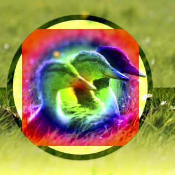
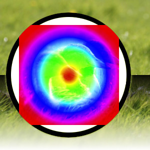
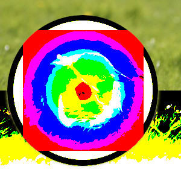

O grupo “Contraste” contém modos de camada que aumentam o contraste.
- Sobrepor
-
Figura 8.24. Exemplo para o modo de camada “Sobrepor”

Exemplo para o modo de camada “Sobrepor”
O modo Sobrepor inverte o valor do pixel da camada inferior, multiplica-o por duas vezes o valor do pixel da camada superior, adiciona isso ao valor original do pixel da camada inferior, divide por 255, e depois multiplica pelo valor do pixel da camada original inferior e divide por 255 novamente. O efeito geral é que ele escurece, a imagem, mas não tanto quanto com o modo “Multiplicar”.
- Luz suave
-
O Modo luz suave não está relacionado a “luz dura” em nada, além do nome, mas ele tende a fazer as bordas mais suaves e as cores não tão brilhantes. É semelhante ao modo “Sobrepor”. Em algumas versões do GIMP, o modo “Sobrepor” e o modo “Luz suave” são idênticos.
- Luz dura
-
Figura 8.26. Exemplo para modo de camada “Luz dura”

Exemplo para modo de camada “Luz dura”
O modo Luz dura é bastante complicado porque a equação é composta por duas partes, uma para cores mais escuras e outra para cores mais claras. Se a cor do pixel da camada superior é maior do que 128, as camadas são combinadas de acordo com a primeira fórmula mostrada abaixo. Caso contrário, os valores de pixel da camadas superior e inferior são multiplicados e multiplicado por dois, e divididos por 256. Você pode usar este modo de combinar duas fotografias e obter cores brilhantes e bordas nítidas.
- Luz dura
-
Figura 8.27. Exemplo para modo de camada “Luz dura”

Camada superior em 100% de opacidade usando o modo “Luz Viva”.
O modo Luz Viva aumenta o contraste muito fortemente, especialmente em realces e sombras. O efeito é uma combinação de Queimar (nas sombras) e Clarar (nos realces), além dos dobros nos denominadores. Este modo também consiste de duas partes, dependendo do valor do componente de cor, onde 0,5 é o limite, o mesmo que com Luz Firme. Se o valor da camada superior for menor ou igual a 0,5: divida o inverso da camada inferior por 2 vezes a camada superior e inverta o resultado. Se o resultado for menor que zero, retorne zero. Se o valor da camada superior for maior que 0,5: divida a camada inferior por duas vezes o inverso da camada superior. Se o resultado for maior que 1,0, retorne 1,0.
- Luz dura
-
Figura 8.28. Exemplo para o modo de camada “Luz suave”

Camada superior em 100% de opacidade usando o modo “Luz de Alfinete”.
Pin light mode is a combination of the Darken and Lighten modes. Mid-tone regions remain almost uninfluenced. If the component value of the upper layer is greater than 0.5: subtract 0.5 from the upper layer and multiply by 2.0. Then the result is the maximum from this value and the value of the lower layer. If the component value is less than or equal to 0.5: take the minimum value of the lower layer and two times the upper layer.
- Luz dura
-
Figura 8.29. Exemplo para modo de camada “Luz dura”

Camada superior em 100% de opacidade usando o modo “Luz Linear”.
O modo Luz Linear aumenta o contraste ligeiramente menos que a Luz Viva. Ele se assemelha a Queimar, mas com o dobro do impacto nos valores tonais do primeiro plano. Se o valor do componente for menor ou igual a 0,5: o resultado é a camada inferior mais duas vezes a camada superior menos 1,0. Se o valor do componente for maior que 0,5: subtraia 0,5 da camada superior e multiplique por 2,0, então adicione a camada inferior.
- Luz dura
-
Figura 8.30. Exemplo para modo de camada “Luz dura”

Camada superior em 100% de opacidade usando o modo “Mistura Firme”.
O modo Mistura Firme contém apenas as seis cores primárias, preto e branco. Os componentes da camada superior e inferior são somados. Qualquer componente maior ou igual a 1,0 é definido como 1. Qualquer outra coisa é definida como 0.